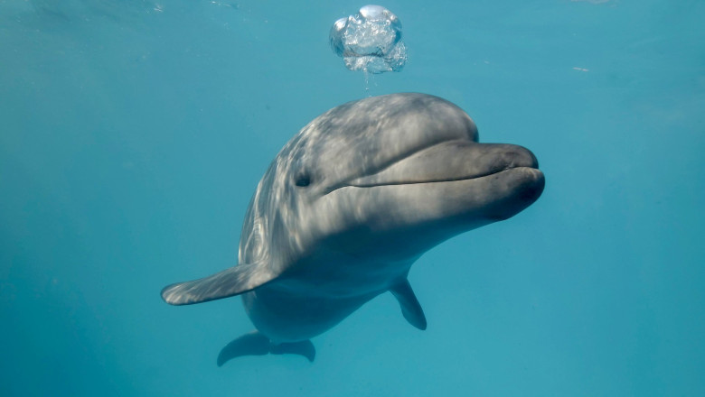
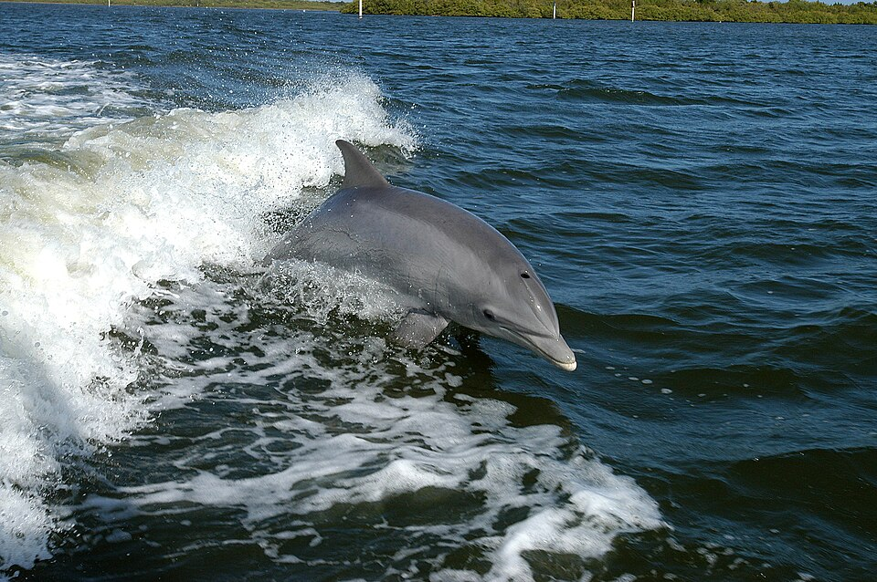
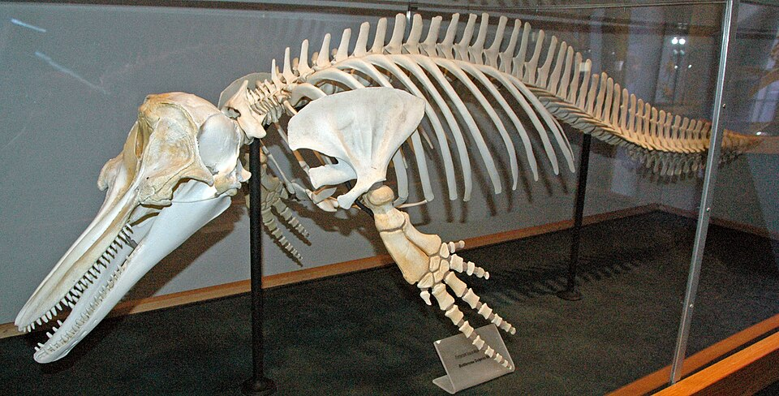
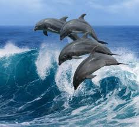

Delfini
Animale marine:Delfini
Added by Malcoci Daria Ioana
Feb 25, 2025

Delfinii sunt mamifere cetacee marine înrudite cu balenele și marsuinii. Există în jur de 41 de specii existente de delfini în 17 genuri diferite. Delfinii variază ca dimensiune de la 1,7 m lungime și 50 kg (delfinii Maui), ajungând până la 9,5 m și 10 tone (orca sau balena ucigașă). Unele specii prezintă dimorfism sexual, unde masculii sunt mai mari decât femelele.
Delfinii sunt răspândiți în întreaga lume, în special în apele puțin adânci din zonele de coastă. Sunt animale carnivore, hrănindu-se cu pește și calmari. Delfinii cuprind familiile existente Delphinidae (delfinii oceanici), Platanistidae (delfinul râului indian), Iniidae(delfinul râului Amazon) și Pontoporiidae și cea probabil dispărută Lipotidae (delfinul chinezesc sau baiji). Delfinii pe lângă alte cetacee, fac parte din încrengătura Chordata. Cele mai apropiate rude ale cetaceelor sunt hipopotamii care s-au abătut cu 40 de milioane de ani în urmă.

Deși nu sunt la fel de flexibili ca focile, unii delfini pot să înoate cu o viteză de 55,5 Km/h. Delfinii își folosesc dinții conici pentru a captura prada rapidă. Ei au un auz foarte bine dezvoltat, adaptat atât pentru aer cât și în apă și este atât de bine dezvoltat încât unii dintre ei pot supraviețui chiar dacă sunt orbi. Unele specii sunt foarte bine adaptate pentru scufundări la adâncimi foarte mari. Aceștia au un strat de grăsime sub piele pentru a le ține cald în apa rece. Majoritatea speciilor preferă apele mai calde a zonelor tropicale, dar câteva, ca delfinul balenă preferă climatele reci.
Deși variază în funcție de specie, culorile delfinilor se încadrează într-un tipar de bază compus din tonuri de gri, de obicei cu partea dorsală de culoare mai închisă.
Creierul delfinilor este mare și foarte complex; și este diferit după structură de cele ale majorității mamiferelor terestre.
Delfinii se pot recupera rapid de la rănile suferite (cum ar fi mușcături de rechin) și doar în foarte rare cazuri pot căpăta o infecție.[5]

Evoluție
Delfinii, împreună cu balenele și marsuinii, sunt descendenții unor mamifere terestre, cel mai probabil din Ordinul Artiodactyl. Strămoșii delfinilor moderni s-au adaptat la viață acvatică, cu aproximație, acum 50 de milioane de ani, în Eocen.
Scheletele delfinilor actuali prezintă în zona pelviană oase de dimesiuni mici, despre care se crede că sunt vestigii ale membrelor inferioare. În octombrie 2006 a fost capturat în apele Japoniei un delfin neobișnuit - acesta prezenta mici aripioare de o parte și de cealaltă a zonei genitale, ceea ce i-a determinat pe cercetători să considere că acestea reprezintă o dezvoltare mai proeminentă a oaselor vestigiale ale membrelor inferioare.
